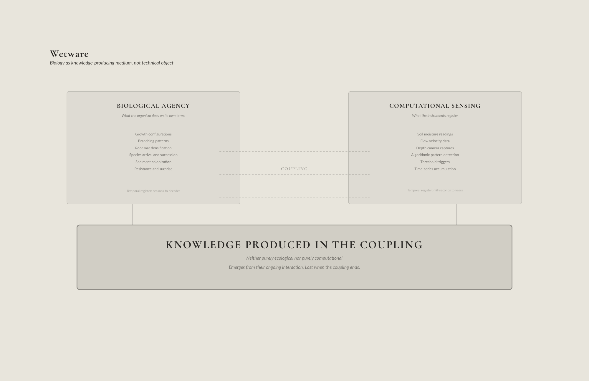
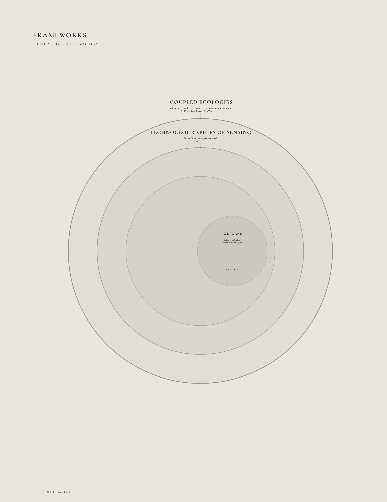

Chapter 8 proposed that the landscape itself can function as a model at 1:1 scale. This chapter examines what happens inside that model, the feedback loops between biological, computational, and institutional agents that constitute adaptive management in practice, and how the concept of Wetware extends that practice into territory where biology and computation are no longer separate domains.
The adaptive management framework described in this chapter is not one I encountered in the literature and then applied to my practice. It is a framework I was already enacting, through physical modeling, through iterative experimental design, through the coupling of biological and computational systems, before I had a name for it. The geomorphology table research at REAL and the UVA Lab, the robotic pruning operations of Algorithmic Cultivation, the sediment diversion proposals for the Mississippi Delta, the wadi reconceptions at NEOM, each of these projects treated design interventions as structured experiments, monitored outcomes to generate knowledge rather than validate predictions, and adjusted strategies based on what the material and biological systems revealed. Holling and Walters gave this methodology its theoretical architecture. Kwinter (2008) provides the complementary design-theoretical frame, that vital forms emerge from dynamic instability, from far-from-equilibrium conditions that resist the stasis conventional design imposes. This chapter traces that architecture and shows how it extends, through Wetware and Coupled Ecologies, into a design practice in which biology, computation, and infrastructure are no longer separate domains but a single operational medium.
Adaptive Management Overview
The concept of adaptive management emerged in the 1970s from an evolving recognition that the current approaches to managing natural resources, predicated on prediction, control, and optimization, were failing in the face of ecological complexity. Developed primarily by ecologist C.S. Holling and fisheries scientist Carl Walters at the International Institute for Applied Systems Analysis (IIASA) in Vienna, adaptive management arose from frustration with attempts to use modeling to integrate knowledge and make accurate predictions about ecosystem behavior (Holling 1978; Walters 1986). Rather than treating uncertainty as a problem to be eliminated through better data or more sophisticated models, Holling and Walters proposed treating it as a fundamental condition to be embraced through structured experimentation.
The foundational insight was that management actions could be conceived as deliberate experiments designed to test hypotheses about how ecosystems function. Instead of implementing policies based on assumed knowledge and then defending those assumptions against contradictory evidence, managers would design interventions that explicitly tested competing hypotheses, monitored outcomes rigorously, and adjusted strategies based on what was learned. Holling’s 1978 book Adaptive Environmental Assessment and Management formalized this approach, outlining a cyclical process of assessment, policy design, implementation, monitoring, and evaluation that would reduce uncertainty over time while continuing to meet management objectives (Holling 1978).
Walters and Hilborn’s work in fisheries management provided mathematical rigor to these concepts. Their 1976 and 1978 publications on adaptive policy design introduced quantitative frameworks for treating management interventions as experiments, using Bayesian updating to refine assessments of fish stock and harvest strategies based on observed outcomes (Walters and Hilborn 1978). This work distinguished between passive adaptive management and active adaptive management, deliberately designing management actions to enable knowledge production. Active adaptive management, while more costly in the short term, promised faster reduction of uncertainties and more robust long-term outcomes.
The geomorphology table research at REAL and the UVA Geomorphology Lab translates this framework directly into design research methodology. Each experimental run on the table constitutes a deliberate intervention testing a hypothesis, if the robotic sediment gates are opened in this temporal sequence, what deposition pattern will result? If flow disruptors are placed in this configuration, how will the sediment field reorganize? The outcomes are monitored continuously, Kinect depth cameras producing point clouds, ultrasonic range finders on motorized rails generating section cuts, image analysis tracking sediment sorting and channel migration. The strategies are adjusted between runs based on what the previous run produced. No run is definitive and each generates data that refines the parameters of the next.
The transition from the Sedimachine at LSU (2012) to the EmRiver table at REAL (2014) illustrates Holling’s adaptive cycle directly. When the Kinect failed to resolve thin depositional layers in the Sedimachine experiments, the instrument’s inadequacy revealed that the phenomenon under investigation was operating at a spatial scale the sensing apparatus could not capture, which directed subsequent development toward modeling systems capable of producing thicker, more legible stratigraphic deposits. The failure of one experimental run produced the parameters of the next research phase. This is active adaptive management operating not on natural resource policy but on research methodology itself, the designer as the adaptive manager of their own inquiry.
This framework drew on Holling’s earlier resilience work, which had challenged equilibrium-based models of ecosystem behavior (Holling 1973). Ecosystems could exist in multiple stable states, and the boundaries between the states were often imperceptible until thresholds were crossed. A forest might appear stable for decades, then collapse suddenly into grassland when a threshold was exceeded. If systems could flip into configurations that had never been observed, relying on historical patterns was risky. Active adaptive management offered methods to address this by continuously probing system behavior through deliberate experiments.
The six core components of adaptive management, as articulated by Holling and Walters, include, stakeholder participation to manage conflict and expand the pool of knowledge. Clear definition and bounding of the management problem. Representation of existing understanding through models that make assumptions and predictions testable. Identification of key uncertainties and alternative hypotheses. Implementation of actions designed to reduce uncertainty while maintaining system productivity. And rigorous monitoring of outcomes to support knowledge production (Walters 1986; Williams and Brown 2014). This creates an iterative cycle in which implementation generates new knowledge to produce feedback that informs subsequent decisions.
In practice, adaptive management has been applied across diverse contexts, from waterfowl harvest regulation in North America, one of its most successful implementations, to forest management, fisheries, and large-scale ecosystem restoration efforts like those in the Florida Everglades and the Colorado River (Williams and Brown 2014; Lee 1993). Yet its record remains mixed. Reviews consistently find that while the concept is widely invoked, true implementation is rare. Many projects claim to practice adaptive management engaging in passive monitoring without deliberate experimental design distinguished in active adaptive management (Westgate et al. 2013). Institutional barriers including regulatory frameworks that demand fixed outcomes, funding cycles that discourage long-term knowledge production, and organizational cultures that punish failure frequently undermine adaptive approaches (Allen and Gunderson 2011).
For landscape architecture and territorial design, adaptive management offers both a framework and a challenge. As discussed, the framework suggests that designed landscapes should be conceived as structured experiments (interventions) that test hypotheses about how ecological, hydrological, and social systems will respond to discrete configurations of form, material, and program. This conception aligns with emerging calls for design experiments in which landscapes serve as research sites, generating knowledge that can inform future practice (Felson and Pickett 2005). The biggest challenge lies in the temporal and institutional dimensions. Adaptive management assumes ongoing engagement over decades that extends far beyond conventional project delivery timelines. It requires clients, regulators, and communities to willingly accept provisional outcomes and iterative refinement rather than fixed solutions. It demands that designers remain involved long after construction or that robust protocols transfer responsibility to stewards capable of continuing the adaptive cycle.
Adaptive management inverts the relationship between design and knowledge. In conventional landscape practice, design follows from knowledge, the designer applies established principles to achieve predetermined outcomes. In adaptive practice, design produces knowledge and the intervention reveals how the world works in a way that could not have been known in advance. This epistemological shift has immediate implications for how designers understand their role, how projects are structured and funded, and how success is defined. It suggests that the most valuable designed landscapes may be those that generate the most learning, not those that stabilize initial intentions.
Failure and Recursion
Contemporary design culture frames failure as aberration, it is something to be avoided through better prediction, thorough analysis, and tighter control. Yet this orientation toward fail-safe systems does not address the indeterminate conditions of the Anthropocene. Earth systems are now changing at rates hundreds to thousands of times faster than the baseline conditions under which human civilization developed (Steffen et al. 2015). The Great Acceleration that began around 1950 has pushed atmospheric carbon dioxide, ocean acidification, biodiversity loss, and nitrogen cycling beyond the range of variability that characterized the Holocene. The consequences will unfold across timescales that exceed the horizon of human planning. How do we confidently predict and intervene in sea level rise over centuries, species extinction over millennia, or carbon cycle perturbations over geological time? These efforts often remain a fantasy of returning to some prior state instead of acknowledging the impossibility of pursuing environmental taxidermy.
Rather than working preventatively, the alternative approach embraces experimentalism that embraces failure toward the proliferation of complexity and autonomy in the context of radical change. The argument is not that failure is acceptable but that certain kinds of failure are essential and that small failures that generate learning, test hypotheses, and build adaptive capacity are preferable to catastrophic failures that result from brittle systems.
This insight has deep roots in ecology where rivers constrained by levees lose the floodplain connectivity that once dissipated flood energy, concentrating destructive force until infrastructure fails catastrophically (Holling and Meffe 1996). The alternative is to design systems that are safe to fail, systems capable of absorbing disturbances through distributed, redundant, and modular organization (Ahern 2011).
Nassim Taleb’s concept of antifragility extends this logic. While resilient systems resist shocks and return to their prior state, antifragile systems actually improve when exposed to volatility and stress (Taleb 2012). The phenomenon of hormesis, where low doses of stressors produce beneficial adaptive responses, suggests that some exposure to challenge is necessary for system health. Complex systems deprived of stressors overprotected, overoptimized, and shielded from variance become progressively more fragile.
For designed landscapes, this framework suggests that small-scale failures should be actively enabled as localized disturbances through flooding in designated areas, vegetation dieback in experimental plots, infrastructure stress-testing under controlled conditions to generate knowledge about system behavior that cannot be obtained through modeling alone. Each failure becomes a probe into the unknown, revealing how materials, organisms, and processes respond to conditions outside normal parameters. Crucially, these failures are contained to isolate their consequences, preventing a cascade through interconnected systems.
The panarchy framework developed by Gunderson and Holling provides a scalar architecture for understanding how small failures relate to large-scale stability. Panarchy describes nested adaptive cycles operating at different scales, fast, small cycles of exploitation, conservation, release, and reorganization embedded within slower, larger cycles (Gunderson and Holling 2002). Small, fast cycles provide sites for experimentation where failures are contained by the stability of larger, slower cycles that provide memory and resources for recovery. The key insight is that suppressing small-scale disturbances does not eliminate risk but displaces it to larger, catastrophic scales (Allen et al. 2014).
Applied to territorial design, interventions should be scaled and distributed to enable recursive learning. Rather than implementing monolithic solutions that commit entire systems to a trajectory, designers deploy arrays of small interventions that test hypotheses simultaneously. When interventions fail, the failure is localized. Other interventions continue to function, providing reference points for comparison and potentials for recovery. The recursive structure of failure and recovery generates knowledge that accumulates over time, progressively refining understanding of system behavior within indeterminacy.
This conception counters the ethics of design practice that emphasizes avoiding harm through expertise and prediction. Under conditions of rapid environmental change, this ethic becomes paradoxically dangerous as the pursuit of fail-safe systems produces fragility, and fragility produces catastrophic failure. An alternative ethic embraces the responsibility to design for learning and to create systems that fail safely, generate knowledge through their failures, and build adaptive capacity for unpredictable conditions.
Climate change is not a problem to be solved in any conventional sense. It is a condition to be inhabited, a context within which human and nonhuman life must find new configurations. The scale and irreversibility of anthropogenic environmental change means that no amount of planning can return Earth to a historical state. What remains possible is the cultivation of adaptive capacity through an ability to respond to indeterminacy, to design productive failures, and continue evolving in conditions that are unpredictable. Designing for failure may be the most responsible form of practice in the entropy of a changing planet.
Wetware

Biology as a knowledge-producing medium, coupled to computational sensing.
Donna Haraway’s figure of the cyborg, a hybrid of organism and machine that dissolves the boundaries between nature and culture, an expression of the biological and the technological, offers a framework for how territories function (Haraway 1991). The constructed wetland is not a natural treatment system supplemented by infrastructure. It is an integrated apparatus in which microbial metabolisms, hydraulic engineering, monitoring algorithms, and maintenance labor form a single functional entity. To speak of nature and technology as separate domains in such contexts is to misrecognize the coupled landscape that has already emerged. This dissertation retains Haraway’s insight about the dissolution of boundaries but departs from her term. “Coupling” better names the ongoing, distributed, non-optimal entanglement this practice produces, where the cyborg as Clynes and Kline conceived it implied optimization and a singular subject that is the opposite of what these territorial systems exhibit.
Wetware includes the biological substrate of these coupled assemblages. In its original usage, the term distinguished the squishy human brain from the hardware of machines and the software of code. Reframed for landscape and infrastructure, wetware encompasses the full range of biological systems through which environmental work is done such as the vascular networks of plants, microbial consortia in soils and reactors, animal behaviors, and sediment-plant-microbe assemblages that function as self-adjusting machines (Patten and Odum 1981). But wetware never operates alone as it is always coupled to sensors that register its states, algorithms that interpret its signals, actuators that modulate its conditions, and institutions that govern its deployment. The coupled landscape is composed of wetware that binds biology, computation, and infrastructure into symbiotic wholes that cannot be meaningfully unpacked into natural and artificial components (Lokman 2017; Gandy 2005).
Algorithmic Cultivation (2019) tested wetware politics in their most explicit form. Most wetware infrastructure enforces a politics of optimization. A green roof is vegetation enrolled in building energy management. A constructed wetland is microbial communities enrolled in nutrient removal. These are coupled assemblages that position biological substrate in service of infrastructural performance targets. Algorithmic Cultivation proposed an alternative. The gantry robot’s shearing operations followed a logic derived from data feeds chosen for their indifference to the growing environment. The data operated as an unfiltered catalyst for provoking the feedback loop of stimulus and response. The robot posed questions through pruning and the plants responded through growth configurations, branching patterns, leaf size, and color changes, that neither the robotic system nor the designer had specified. The wetware was enrolled not as a performance surface to be optimized but as a dialogue, biological agency cultivated rather than instrumentalized (cf. Stavrinidou et al. 2015, who demonstrate that analog and digital circuits can be fabricated within living plant tissue, making the coupling between biology and computation literal rather than metaphorical).
The installation was only partially realized. Technical difficulties limited operation to weeks rather than the planned year. But the failure was itself an artifact of wetware politics. Maintaining a coupled assemblage in which biological agency is active on its own terms, rather than performing a specified role, proved technically and institutionally demanding in ways that simpler optimization-oriented systems would not have been. That tension between biological responsiveness and sustainable technical performance scales directly to the territorial systems the dissertation proposes.
The framing matters because traditional design habits treat nature as a scenic trope or passive services that produce shade, buffers, and habitat that are separate from the technological systems that monitor and manage it. The language of ecosystem services made processes legible in policy and planning, but it positioned life as a provider, rendering it invisible to support economic and infrastructural systems. Wetware, understood as part of a coupled condition, emphasizes that biological systems are actively configured, monitored, and calibrated through technological means to perform specific tasks. In this sense a green roof is vegetation on a building that provides insulation and cooling but it is a performance surface whose plant communities are selected, monitored, and maintained in relation to building energy systems, ecological trends, species inhabitation, urban stormwater infrastructure, and climate data.
Thinking in these terms clarifies that failures in wetware are not purely biological. When treatment wetland vegetation dies back, the failure propagates through the entire coupled system where sensor data registers anomalies, operational protocols demand response, regulatory compliance comes into question, and downstream systems experience changed nutrient loads. Responsibility is not localized to nature or technology but must be understood as distributed across an integrated apparatus. Similarly, success cannot be attributed to clever engineering or resilient ecology alone but it emerges from the ongoing calibration of biological, computational, and institutional components.
The risk is specific. Wetware deployed within a Promethean frame becomes biological infrastructure optimized toward predetermined performance targets. The marsh is enrolled to build land. The constructed wetland is enrolled to treat wastewater. The green roof is enrolled to manage stormwater. In each case, biological agency is instrumentalized, its responses valued only insofar as they serve the objective the design specified. What is lost is precisely what makes wetware epistemologically productive, the biological system’s capacity to respond on its own terms, to produce knowledge about conditions the designer’s objectives did not anticipate, to reveal through its own metabolic intelligence what the sensing apparatus was not calibrated to detect. Optimization suppresses the signal. The territory stops teaching because the apparatus has been designed to stop listening.
This framing also transforms how landscapes are read. Algal blooms, vegetation shifts, changes in water clarity are not solely ecological phenomena but interfaces within a larger information system. As machine learning algorithms can detect patterns in satellite imagery, acoustic monitoring, and sensor networks that exceed human perceptual capacities, they are the canary in the coal mine for regime shifts or contamination events (Borowiec et al. 2022). Autonomous monitoring systems generate data streams that feed into ecological models, which in turn inform management decisions that reshape the conditions under which wetware operates. The landscape becomes a distributed sensing apparatus in which biological and technological intelligences collaborate to produce environmental knowledge.
The machine, in this framing, is not an intruder but an ally that creates conditions for the territory’s wildness. Wetware frames computational infrastructure as a partner that generates freedom for biological agency rather than suppressing it. The designer sets initial conditions and steps back. The territory evolves under those conditions without direct control, and reflexive stewardship means acknowledging that the practitioner shapes the framework but not the specific outcomes. The territory’s processes produce the form.
Living Technologies
Before “wetware” entered critical vocabulary, designers and engineers have been developing living technologies as carefully composed ecological systems that perform industrial work. In the 1970s and 1980s, “living machines” were developed as wastewater treatment systems composed of series of tanks, basins, and planted cells that were populated by microbes, invertebrates, fish, and vegetation. Effluence passed through anaerobic reactors, aerobic tanks, and planted ecological fluid beds, each stage hosting different communities of organisms that performed a discrete part of the treatment.
Descriptions of these systems make clear the intentionality of how the wetware was composed. Technical papers and design manuals specify sequences of trophic guilds and habitat types, putting to work microbial consortia breaking down organic matter, snails and invertebrates grazing biofilms, emergent and floating plants providing surface area and oxygenation, fish helping to control algae and invertebrate populations (Todd 1996). This arrangement of organisms is as carefully designed as the plumbing and together, they achieve effluent quality comparable to conventional plants.
Regulatory documents underline the degree to which these systems function as verified infrastructure. A U.S. Environmental Protection Agency fact sheet on the “Living Machine” describes performance standards, hydraulic loading rates, required land area, and maintenance regimes in sober language. Noting that living machines achieve secondary or advanced treatment levels, identifying their sensitivity to temperature and light, and lists operational tasks, from sludge removal to plant harvesting (U.S. EPA 2001). The structure for wetware is fully inside the world of engineering.
At Findhorn Ecovillage in Scotland, visitors walk beside glass tanks and planted beds (interfaces) as wastewater is gradually clarified, learning the flow of nutrients and energy as they observe. At the Omega Center for Sustainable Living in New York, living machines are staged as both educational exhibits and critical infrastructure, fortifying the idea that sewage is not “disposed of” but metabolized by a living infrastructure (John Todd Ecological Design 2011).
Constructed wetlands share a parallel lineage. Initially deployed as finishing steps downstream of water cleansing plants, they have expanded into primary treatment systems and large-scale stormwater infrastructures. Designers calibrated the basin depths, substrate mixes, vegetation palettes, and retention times to support microbial processes and plant growth, often monitoring performance parameters like nitrogen, phosphorus, biochemical oxygen demand, and suspended solids over decades. And in some municipalities, these wetlands are public parks, their wetware functioning simultaneously as treatment, habitat, and civic space.
Territorial Wetware
If living machines and constructed wetlands demonstrate wetware at the scale of the site, marshes and deltas reveal wetware potentials at territorial scales. In estuarine and coastal landscapes, vegetation and sediment interact in feedback loops that can build or destroy land over decades and centuries. Salt marsh plants trap sediment and add organic matter to soils as this accretion raises marsh surfaces, allowing them to keep pace with gradual sea-level rise. But if sea-level rise accelerates, or if sediment supply is cut off by upstream dams or channelization, the feedback reverses drowning vegetation releases stored carbon, soils compact, and marsh platforms sink (Kirwan and Megonigal 2013).
In this context, to build land with a rising sea calls for aligning infrastructural operations with marsh wetware. Rather than routing sediment offshore or down a single navigation channel, controlled diversions and distributary networks redirect flows with responsive infrastructures into subsiding basins, using marsh plants and microbial processes to turn suspended material into stable land (Temmerman and Kirwan 2015). Marsh restoration is mitigation and a strategic investment in territorial stability.
These interactions between vegetation, sediment, infrastructure, and sea-level rise are easy to describe abstractly but often remain opaque at the scale of policy and design decisions.
My own practice-based work has translated these ideas into specific design methodologies. Synthetic Mudscapes, developed through the Coastal Sustainability Studio at LSU, proposed a territorial wetware system for the Mississippi Delta in which channel networks, gates, and monitored basins direct sediment arriving in flood pulses into target subsidence areas. The responsive infrastructures, sediment gates, adjustable outlets, real-time monitoring, could be tuned to optimize land building while supporting navigation, recreation, and existing settlements. Concurrently, monitoring provides knowledge to route regional waste streams in tolerable amounts, supplying increased nitrogen and phosphorous and supplemental soils to bolster establishing vegetation in specific areas. Wetware is the engine. Without marsh plants, waste streams, and microbial accretion, the redirected sediment would wash away. The design does not build land. It creates conditions under which wetware builds land, an operational instance of what Patten and Odum (1981) describe as the cybernetic nature of ecosystems, where feedback circuits between biotic and abiotic components produce self-organizing behavior that transcends the properties of individual components.
The consultation with Sherwood for NEOM (2022–25) extends this territorial wetware logic to a desert hydrology. The proposal reconceives ephemeral wadi systems surrounding The Line not as drainage problems requiring conventional channelization but as productive wetware infrastructure, holding areas that slow water to sustain life, recharge aquifers, and concentrate erosion where it builds productive ravines, while managing a fluctuating coastal isohaline zone through controlled water inputs. The computational layer monitors soil moisture, wadi flow velocities, aquifer levels, and vegetation establishment. The biological substrate, salt-tolerant plantings, microbial soil crusts, brackish-water ecologies, performs the environmental work. As in Synthetic Mudscapes, the infrastructure does not produce the landscape. It produces the conditions under which the landscape’s own biological and hydrological dynamics produce themselves. The aesthetic and the infrastructural are not separable. They emerge from the same hydrological and geological processes operating on the same terrain, and what the landscape becomes when adaptive strategies work as intended is a synthesis of the Picturesque and the Performative that is actively and intentionally evolved over time.
Territorial wetware, then, is not instantiated in a pre-infrastructural nature. It is deeply intertwined with policy, engineering, and cultural choices. Recognizing this allows design to operate not only on hardened structures but on flows and living systems embedded with computational fluency, adjusting levee alignments, diversion rules, and shoreline treatments in ways that support the biological communities that make land possible.
Bioindicators, Biohybrids, and Plant Information Systems
Traditional bioindicator approaches exist as examples of wetware concepts, albeit often indirectly. Aquatic ecologists use multi-metric indices using invertebrate assemblages to grade stream health. Foresters read shifts in understory species as signs of changing hydrology or disturbance. Air-quality assessments treat lichen diversity and morphology as proxies for deposition patterns. In all these cases, living communities serve as integrators of complex sensing ecosystems. Contemporary biohybrid projects make this integrative capacity explicit by coupling organisms directly to sensors, power systems, and data networks. The resulting devices are difficult to delineate because they operate across scales from cellular responses to software alerts.
Research on biohybrid assemblages produces prototypes in which mussels, algae, worms, or microbes are incorporated into housings where their responses to contaminants or environmental stress are measured by sensors. Changes in behavior, shell opening and closing, shifts in fluorescence, or variations in electrical potential are translated into data streams indicating the presence of toxins, hypoxia, or other hazards (Thenius et al. 2021). In some projects, microbial fuel cells that are colonized by localized biofilms generate power while also reflecting conditions where changes in voltage or current can indicate changes in organic load, oxygen availability, or contamination, suggesting autonomous monitoring potential driven by the wetware device (Rajewicz et al. 2021; 2022).
At more architectural scales, plant-based information systems illustrate how vegetation is configured as sensors and databases. On contaminated riverfronts patterns in tree growth, leaf chlorosis, or root morphology reveal underground plumes or soil salinity gradients. If these patterns are systematically logged, mapped, and combined with sensed measurements, plant communities are records of industrial history and ongoing remediation. Designers can use these records to steer interventions, targeting the dispersion of amendments, regrading, or re-planting to construct public narratives about exposure and repair.
When biohybrid organisms disagree with technical instruments, the divergence is not a calibration error to be resolved. It is information. A mussel closing its shell when dissolved oxygen readings show acceptable levels is not malfunctioning, it is registering something at a scale and resolution the meter was not designed to detect, a localized chemical plume, a contaminant that doesn’t appear in the standard parameter set, a threshold the sensor was calibrated to miss. The wetware knew before the instrument did. Designing with biohybrid systems means building protocols that treat these divergences as the most valuable data the system produces, not noise to be filtered out but signals to be followed. The gap between what the organism is doing and what the instrument is reading is where the territory’s intelligence exceeds the monitoring apparatus.
Citizen sensing extends this into the social realm. Communities often first register environmental change not through instruments, but through shifts in wetware, smells of algal blooms, unusual fish behavior, mass die-offs, or sudden vegetation shifts. When these observations are coupled with low-cost sensors, GPS-enabled phones, and shared data platforms, they can form rich, situated datasets that challenge or supplement official monitoring. Wetware is both the site of harm and the early warning system that alerts people to it.
Designing with wetware in this case involves choosing indicator species or communities that respond sensitively to relevant stressors and have capacity to communicate with machines to establish monitoring protocols that balance scientific rigor with accessibility. The possibility exists to build interfaces in situ or with maps, dashboards, or physical markers that translate biological signals into actionable information, and producing collective interpretation so that communities can utilize it for decision-making.
Protocols for Designing with Wetware
Because wetware is alive, static specifications are not enough. Protocols are required that acknowledge uncertainty, facilitate learning, and coordinate aggregating, small acts of care over long periods. These protocols operate across the life of a project, from concept, through design development and construction, into operations, maintenance, and eventual transformation.
At the concept stage, wetware asks designers to frame projects as structured experiments. These hypotheses can be made explicit, with plans for how they will be tested and revised. Design development translates these hypotheses into plant palettes, soil mixes, microtopographies, and hydrologic regimes. For a wetland restoration, this might mean specifying environmental envelopes that include ranges of salinity, inundation, and disturbance within which desired communities may persist.
Construction is a phase of initial calibration, where as-built conditions are measured against assumptions. Are water levels influenced within the intended range? Are soils compacted more or less than anticipated? Are service corridors and access adequate for ongoing maintenance? Early monitoring identifies incongruencies and triggers adjustments as systems emerge.
Operations and maintenance are where protocols take hold. Wetware infrastructures use routines that are neither rigidly fixed nor improvised in isolation. Maintenance manuals are not written solely as lists of tasks (mow every two weeks, harvest algae monthly) but as conditional scripts, if water levels are above a certain elevation for more than a specified duration, adjust weir height, if a particular species dominate beyond a threshold, introduce the thinning or altering of endemic habitats. These scripts encode flexibility and responsiveness, tying actions to sensed wetware states (Lister 2007; Raxworthy 2018).
The Prototyping the Bay studio (2019–present) translates these protocols into a pedagogical framework. Students working on Chesapeake Bay island sites are required to frame their designs as structured experiments with explicit hypotheses, monitoring regimes, and revision triggers. A student proposing a living shoreline on Tangier Island does not deliver a fixed design. They deliver a conditional protocol, if accretion rates measured by sediment pins exceed a threshold within two years, extend the shoreline treatment to adjacent reaches, if wave energy monitoring indicates overwash frequency above a specified return interval, deploy temporary breakwater modules and if the planted Spartina fails to establish in the northern quadrant, test alternative species tolerant of the measured salinity range. The design is a script, not a blueprint. The studio’s assessment criteria reward the quality of the adaptive logic, the clarity of hypotheses, the specificity of monitoring commitments, the intelligence of conditional responses, over the visual resolution of the final form.

University of Virginia studio work referenced in the chapter source materials.
Institutional protocols are just as important and the most important work may happen years after ribbon-cutting of a project. Long-term stewardship arrangements, community-based organizations, dedicated maintenance endowments, and adaptive management plans written into permits can create the conditions under which wetware can be tended and recalibrated. Importantly the institutions are facilitating negotiation as biology, environmental process, and computation are producing knowledge and experiences.
Representational practices support these protocols by foregrounding time and contingency. Designers can use sequences, year 1, year 5, year 20, or scenario diagrams showing multiple potential trajectories depending on disturbances and autonomous management decisions (Mathur and da Cunha 2001, 2009). These representations communicate with communities, agencies, and funders to align expectations and commitments towards an evolving reality.
Ethics and Political Ecologies of Wetware

Source figure adapted from the dissertation chapter materials.
As stated previously, designing with wetware is never solely a technical exercise. It rearranges relationships among humans, other species, and infrastructures in ways that carry ethical and political weight. When organisms and computational intelligence are explicitly enrolled in performing tasks of treating waste, absorbing pollutants, or buffering storms the line between care and exploitation is centered as a matter of design and governance.
Political ecology is a starting point by insisting that environmental interventions be evaluated in terms of winners, losers, and mechanisms of outcome (Robbins 2012). There is also the dilemma of techno-solutionism, the tendency to treat social and political problems as issues solvable by clever technology. Wetware infrastructures can be particularly seductive as they appear sustainable, they can be documented beautifully, and they promise to transform waste into productivity. Yet wetware treating sewage does not, by itself, address inequitable access to sanitation as an algae facade on a museum does not change the emissions of a region’s industry (Morozov 2013).
At the same time, wetware opens space for varied forms of environmental relationship. When treatment systems are visible and legible, they can help dismantle the illusion that wastes simply disappear. An ethical wetware practice would seek to make explicit the trade-offs and externalities of any wetware system, including non-human harms to ensure participation of those affected in designing, monitoring, and governing infrastructures allowing systems to be altered or dismantled if they prove unjust or harmful. In other words, the politics of wetware are inseparable from the politics of the larger systems in which it is embedded. There is no neutral wetware and values have to drive the arranging of living circuits within contested worlds.
Tangier Island in the Chesapeake Bay makes this politics concrete. The island is losing roughly fifteen feet of shoreline per year to wave erosion and subsidence. Its population has declined from over a thousand to fewer than four hundred. The watermen who remain carry generations of embodied knowledge about the bay’s behavior, crab migrations, oyster bar locations, tidal patterns, the slow inward creep of the marsh edge. They know their landscape is dying. What they do not have is a wetware infrastructure designed to respond, no distributed monitoring of sediment budgets, no responsive shoreline systems that could be adjusted as erosion patterns shift, no computational layer linking what the watermen know to what the sensing apparatus could extend. What they have instead is a seawall, a fixed infrastructure designed to hold a line that the bay has already decided to move.
The politics of this are not subtle. Federal monitoring programs measure the Chesapeake’s water quality, its dissolved oxygen, its nutrient loads, the variables that matter to regional regulatory compliance. They do not measure, at the resolution that matters, the sediment dynamics, marsh accretion rates, and wave energy patterns that determine whether Tangier Island exists in thirty years. The island’s wetware, its marsh grasses trapping sediment, its oyster reefs attenuating wave energy, its tidal flats cycling nutrients, is functioning, but it is functioning below the threshold at which the monitoring infrastructure registers it as significant (Holling 2004; Parks 2013). The political ecology of wetware is here, who gets measured determines who gets protected. This is the argument that Chapter 07 develops as technogeographies of sensing, the spatial and political implications of where sensors are placed, what they measure, and whose landscape becomes legible to the systems that govern environmental response.
Wetware and Adaptive Epistemologies

Framework diagram locating Wetware within the dissertation's broader adaptive epistemology.
Wetware, understood as the biological substrate of coupled landscapes, posits that it is not an isolated natural layer but the living component of integrated assemblages in which biology, computation, and infrastructure are synthesized. It foregrounds the need for protocols, sensing, and care while exposing the politics of who benefits from these hybrid systems. It also provides a concrete medium through which adaptive epistemologies can operate, not through biological processes alone, but through the feedback loops that couple living systems to monitoring technologies, analytical algorithms, and operational adjustments.
Treating a design as a hypothesis means asking what the coupled ecology will do and how it is monitored. Monitoring plant communities, microbial indicators, bird counts, and visitor experiences provides feedback on whether hypotheses are accurate (Cook 1999). The monitoring is itself a technological apparatus of sensors, data pipelines, machine learning, and visualizations that render information legible to operators and broad publics. The feedback loop is not uniquely ecological but socio-technical, a coupled ecology in which biological responses are interpreted as data, interpreted through algorithms, and translated into management actions that form the conditions under which wetware operates.
Responsive design frameworks offer the technical means to tighten these feedback loops. In Responsive Landscapes (Cantrell and Holzman 2016), Holzman and I identified six modes through which computational systems couple to environmental processes, elucidate (making invisible processes perceptible), compress (collapsing temporal scales to reveal slow dynamics), displace (transmitting environmental information across spatial distances), connect (linking previously unrelated systems through shared data), ambient (embedding environmental feedback into the background conditions of inhabited spaces), and modify (using actuators to directly alter physical conditions in response to sensed states). These six modes provide a precise vocabulary for how sensors, models, and actuators link wetware conditions to operational decisions. Computational intelligences do not replace biological intelligence but enter as collaborators, the algorithm interprets signals that wetware produces, and management shaped by algorithmic outputs alters the conditions of wetware evolution.
Deep reinforcement learning can uncover strategies the territory’s managers have never imagined. The territory benefits from a third intelligence that discovers solutions beyond human heuristics, but the opacity of those solutions raises accountability questions. Multiple Intelligences require collaborative reasoning among human, machine, and territorial agencies.
Yet if feedback is limited only to technical performance metrics adaptive epistemology remains narrow. Political ecology suggests that feedback that addresses plurality and justice, who is being helped or harmed by coupled ecologies must be integrated as well (Robbins 2012).
In this sense, wetware is more than a layer to add to infrastructure, but a fundamental condition of practice in the Anthropocene. It demands designers are facile with hybrid systems, translating between biology, computation, and policy, and who see monitoring and maintenance as creative acts within coupled assemblages. Adaptive epistemologies grounded in Wetware take seriously the idea that knowledge emerges from the coupling of biological and computational intelligences, that landscapes evolve through technological as well as ecological processes, and that design is centered on knowledge production.
The feedback loop has been defined. But feedback implies time and systems operate across time that far exceeds project timescales. What happens when the infrastructure must persist and learn across decades and generations? What does a robotic relationship designed to steward a marsh for fifty years look like? What kind of intelligence does slow persistence require?